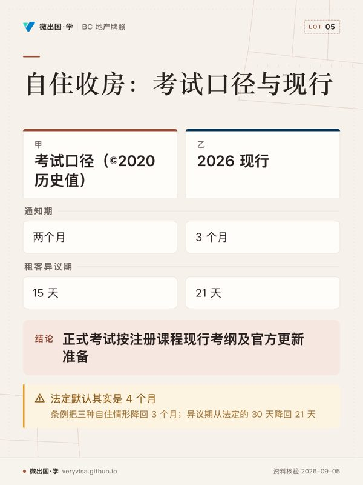

🃏 Flashcards · 3 闪卡 · 3 张 🖼 Slides · 2 幻灯 · 2 页 ✍️ Questions · 11 刷题 · 11 道
租赁与共管物业 tenancy-strata P1 必拿分 P1 Must score
ZH EN ZH + EN
先看这一章怎么考 First, how this chapter is tested
定性辨析题：给出一段占用处所的事实（如合同抬头写许可但实际授予排他占有、或租客与业主共用厨房卫生间、或成交前买方提前入住），考你识别属于租赁（lease）还是许可（licence）、属于意愿租赁（tenancy at will）还是周期性租赁（periodic tenancy），以及是否受《住宅租赁法》（Residential Tenancy Act, RTA）保护。 Classification and distinction questions: presenting facts of premises occupancy (such as agreements titled licence but actually granting exclusive possession, tenants sharing kitchen or bathroom facilities with the owner, or buyers occupying early before completion), testing your ability to identify whether an arrangement constitutes a lease or a licence, a tenancy at will or a periodic tenancy, and whether it falls under the protection of the Residential Tenancy Act (RTA). 商业与住宅双轨对比题：故意把商业租赁（commercial tenancy）的普通法默认规则（如租客当心 caveat lessee、扣押财物变卖 distress、无减损损失义务、未明文禁止即可自由转租）套进住宅场景，或反过来把住宅的法定保护套进商业场景，测试你能否先分清物业性质再选法律工具。 Commercial vs. residential dual-track comparison questions: intentionally applying commercial tenancy common law default rules (such as caveat lessee, distress by seizing and selling goods, absence of a duty to mitigate, or free subletting unless expressly prohibited) to residential scenarios, or vice versa by applying residential statutory protections to commercial scenarios, testing your ability to distinguish property character before selecting legal remedies. 数字与时限精准记忆题：围绕住宅涨租间隔（12 个月）与提前通知期（3 个月）、保证金与宠物押金上限（各半个月租金）及退还/索赔期限（15 天）、房东进入处所的书面通知窗口（提前至少 24 小时且不超过 30 天、早 8 点至晚 9 点）、以及各类终止通知的通知期与异议期设问。 Precise numbers and statutory deadlines questions: testing residential rent increase intervals (12 months) and advance notice periods (3 months), security deposit and pet damage deposit limits (half a month's rent each) and return or claim deadlines (15 days), written notice windows for landlord entry (at least 24 hours and not more than 30 days ahead, between 8:00 a.m. and 9:00 p.m.), and notice and dispute periods for various notices to end tenancy. 最常丢分的陷阱（看到题干信号就警觉） Traps that cost the most marks (watch for the signal in the stem)
商业与住宅规则串台 Confusing commercial and residential tenancy rules 读题干第一句先圈出物业用途是商业店铺/写字楼/仓库（commercial）还是居住单元（residential），以及租期是否超过 20 年。 In the first sentence of the stem, immediately identify whether the premises are used as a commercial shop, office, or warehouse versus a residential living accommodation, and verify whether the term exceeds 20 years. 考试旧口径与现行新法混淆 Conflating course manual exam rules with current statutory amendments 看到住宅自住收房、装修收房、超额涨租或强制执行占有令等题目时，先按考试口径选标准答案，同时在脑中对照现行法差异。 When encountering questions on landlord's use, renovictions, additional rent increases, or enforcing an Order of Possession, answer according to the course manual standard while keeping current statutory differences clear in mind. 抬头名称与实质排他占有倒置 Prioritizing document title over substantive exclusive possession 题干一面强调合同抬头写许可，一面描述占用人拥有独立门锁、连业主本人未经允许也不能入内，这就是在考排他占有（exclusive possession）决定实质为租赁。 The question emphasizes a licence label in the document title while describing that the occupant holds keys to lock out even the owner without permission, which tests whether exclusive possession substantively creates a lease. 本章考点页：导图、要点表、7 道带逐项解析的练习 →
核实日期：2026-09-05 。《住宅租赁法》(Residential Tenancy Act, RTA) 与《商业租赁法》(Commercial Tenancy Act, CTA) 均回读 BC Laws 现行合并本（两部都自标 current to September 1, 2026），配套的 Residential Tenancy Regulation 同日回读。出处见文末源表。
这一章是全书时效风险最高的一章之一。 商业租赁那一半几乎没有变——它靠普通法与合同条款运行，六年里唯一值得提的是法条编号没动。住宅租赁那一半则被 2021、2024、2025 三轮修法整段重写 ：自住收房的通知期改过两次、装修收房从「发通知」变成「向仲裁机构申请裁令」、若干种通知必须由官方网上门户生成 、特定 5 户及以上楼宇禁止 自住收房、年度租金上限的公式也换了。
考试口径（©2020）关于住宅收房的每一个天数、每一份表格、以及它给持牌人示范的那条合同条款，今天照做都会出事 。
一、先分清两个世界：租赁 vs 许可、商业 vs 住宅 本节回答 This section answers 如何区分租赁与许可，以及哪些居住安排不适用住宅租赁法 Distinguishing leases from licences and identifying living arrangements exempt from the Residential Tenancy Act 本章考题 1 Question 1
租赁与许可（lease vs licence）
租赁 (lease) 在普通法上创设土地权益 (interest in land) ：它「随地而走 (runs with the land)」，业主把地卖了，新业主要承受这份租赁；它同时创设房东与租客的法律关系，带来一整套默示权利义务。许可 (licence) 只是一份合同特权：不创设土地权益，不随地而走，只有合同上明写的那些权利。
判断一份协议到底是租赁还是许可，看的是当事人的意图 ，而认定意图最有分量的证据是：这份协议有没有给出排他占有 (exclusive possession) ——占用人能不能连业主也排除在外地控制该处所。合同抬头写「licensor / licensee」不决定性质；给了排他占有，法院通常认定它是租赁。
这一步为什么要紧：只有租赁关系才落进 RTA 与 CTA 的保护 。判成许可，租客拿不到 RTA 那一整套安全保障。
商业租赁 vs 住宅租赁：两套完全不同的法律工具
图：商业租赁 vs 住宅租赁——两套完全不同的法律工具
⚠️
「这套房子是住宅，所以走 RTA」——不一定
RTA s.4 列了 11 类不适用 的居住形态，考试口径只抄了其中 4 类。最常被漏掉的是
s.4(c)：租客与该处所的业主共用厨房或卫生间 ——这正是 BC 独立屋出租最常见的一种形态。
还有：非营利合作社租给社员、学校租给学生或员工的宿舍、
与主要作商业用途的处所同一份合同一起租的居住部分、作度假或旅游住宿使用的居住处所 、
紧急庇护与过渡性住房、护理与医院设施内的住宿、惩教机构内的住宿、
租期超过 20 年 的租赁，以及适用《房车园租赁法》(Manufactured Home Park Tenancy Act) 的协议。
上市前问清楚「租客跟业主共不共用厨卫」，比背 11 类清单更管用。
合同要写什么
商业 ：租期超过 3 年的租约要满足《Law and Equity Act》s.59（一般须有书面），否则法院不予强制执行；即便法律不要求书面，也必须写清当事人姓名、处所描述、起始日、租期长度、租金与其他重要条款——因为商业租赁的空白处会被普通法用默示条款填满 ，填出来的结果未必是当事人想要的。
住宅 ：RTA s.13 与条例规定协议必须书面、双方签名注明日期、用普通人读得懂的写法，并且必须包含标准条款 (standard terms)、双方法定全名、单位地址、订立日期、房东送达地址与电话、起租日、周期性租期的周期、固定期租期的结束日与到期后如何处理、租金金额与到期日、租金含哪些服务与设施、押金与宠物押金的金额与缴付日。省里备有标准表格，但不强制使用 ；自拟协议只要满足条例即可，且订立后须及时把书面协议副本交给租客，最迟不得晚于 21 天 。
节末检索小测 · 先别往回翻，凭记忆作答 Quick recall check: answer from memory before scrolling back
A homeowner rents a basement bedroom to a university student under a written agreement. The student has a lock on the bedroom door but shares the house's only kitchen and bathroom with the homeowner. Under the Residential Tenancy Act (RTA), how is this living arrangement treated?
一名房主通过书面协议将地下室卧室租给一名大学生。学生卧室门上有锁，但与房主共用屋内唯一的厨房和卫生间。根据《住宅租赁法》（RTA），这种居住安排如何处理？
a It is fully governed by the RTA because the parties signed a written residential agreement. ✗ 掉入「是住宅就走 RTA」的陷阱。RTA s.4 明确列出了不适用该法的居住形态，签了书面协议也不能改变法定排除规则。 This falls into the trap of assuming any residential living arrangement is governed by the RTA. Section 4 of the RTA explicitly lists exempt accommodations, and signing a written tenancy agreement cannot alter statutory exclusions.
b It is exempt from the RTA because the tenant shares a kitchen or bathroom with the owner of the premises. ✓ 正确。根据 RTA s.4(c)，租客与该处所的业主共用厨房或卫生间的居住安排不适用《住宅租赁法》（Residential Tenancy Act）。 Correct. Under section 4(c) of the Residential Tenancy Act, living accommodation in which the tenant shares bathroom or kitchen facilities with the owner of that accommodation is exempt from the RTA.
c It is governed by the Commercial Tenancy Act because any arrangement excluded from the RTA becomes commercial. ✗ 混淆了排除适用与商业租赁的界限。不适用 RTA 的居住安排受普通法与合同法调整，不会因为共用厨卫就自动变成商业租赁（commercial tenancy）。 This confuses statutory exclusion with a commercial tenancy. Living arrangements exempt from the RTA are governed by common law and contract, and sharing kitchen or bathroom facilities does not convert a residential occupancy into a commercial tenancy.
d It is governed by the RTA only if the student's fixed term exceeds 20 years. ✗ 记反了 20 年规则。根据 RTA s.4，租期超过 20 年的租赁恰恰是不适用 RTA 的情形，按商业租赁处理。 This reverses the 20-year rule. Under section 4 of the RTA, tenancies that have a term exceeding 20 years are expressly exempt from the RTA and are treated under commercial tenancy rules.
看答案与每个选项的解析 Show the answer and why each option is right or wrong 答案 Answer ：b
二、租期类型与终止（商业侧：考试口径长青） 本节回答 This section answers 商业固定期、周期性与意愿租赁如何产生及如何合法终止 How commercial fixed-term, periodic, and at-will tenancies arise and how they are lawfully terminated 本章考题 2 Question 2
固定期 (fixed term) ：商业租约可以是一周也可以是 99 年，起始日与期限必须在生效前可以确定。固定期届满自动终止，任何一方都不需要发通知 。租期超过 20 年的「住宅」性质租赁不算住宅租赁，按商业租赁处理。
周期性租赁 (periodic tenancy) ：在期末自动续为同样长度的一期，直到有一方以适当通知终止。商业周期性租赁的产生有两条路——租约明写，或者租客在固定期满后继续占有而房东收下租金，由法律推定。推定出来的周期长度看原租期与租金的表述方式：原租期一年以上且租金按年表述，通常推为年租；原租期不足一年或租金按月表述，通常推为月租。
商业周期性租赁的终止只要求「合理通知 (reasonable notice) 」：周租或月租通常一个租期，年租通常六个月。通知形式不重要，只要意思清楚、时间确定；姓名、处所、日期上的小错误，只要意图明确，通常不影响效力。
意愿租赁 (tenancy at will) ：占用人经业主同意占有土地，任何一方随时可终止。最常见的场景是卖方允许买方在成交前先行入住 。只要不是明确约定免租，业主有权就「使用与占有」获得补偿；但如果开始按期收租，法律会推定它已变成周期性租赁。
🔧
成交前提前交房，别以为「反正马上就过户了」
提前占有创设的是意愿租赁。若买方开始按月付款而交易迟迟不闭，
这段关系可能被推定成周期性租赁，终止就得给合理通知。
商业物业尤其要在合同里写清占有的性质、费用与终止方式。
节末检索小测 · 先别往回翻，凭记忆作答 Quick recall check: answer from memory before scrolling back
A commercial tenant held a five-year fixed-term lease for a warehouse with rent stated as an annual amount. After the term expired, the tenant stayed in possession and the landlord kept accepting rent at the annual rate set out in the lease, without signing a new lease. What tenancy has been created by implication of law, and what notice is generally required to terminate it?
一名商业租客持有一份为期五年的仓库固定期租约，租金按年表述。五年期满后，租客继续占有，房东在未签新租约的情况下继续按原租约的年租金标准收受租金。法律推定创设了哪种租赁，通常需要多久的通知才能终止？
a A tenancy at will that either party may terminate immediately without advance notice. ✗ 混淆了意愿租赁（tenancy at will）与周期性租赁（periodic tenancy）。一旦房东在期满后开始按期收租，法律即推定已转为周期性租赁，不再是随时可终止的意愿租赁。 This confuses a tenancy at will with a periodic tenancy. Once the landlord accepts periodic rent after expiry, the law implies a periodic tenancy rather than a tenancy at will terminable immediately without notice.
b A five-year renewal of the original fixed-term lease that expires automatically at the end of the fifth year. ✗ 误以为固定期租约期满留用会自动续签同等长度的固定期（fixed term）。法律推定创设的是周期性租赁，而非新的五年固定期。 This mistakenly assumes that overholding after a fixed term renews the lease for another identical fixed term. The law implies a periodic tenancy, not a new five-year fixed-term lease.
c A year-to-year periodic tenancy requiring six months' reasonable notice to terminate. ✓ 正确。商业固定期满后租客继续占有且房东收租，推定为周期性租赁（periodic tenancy）；原租期一年以上且租金按年表述的，通常推定为年租，终止年租通常需要六个月的合理通知（reasonable notice）。 Correct. Where a commercial tenant overholds after the expiry of a fixed term and the landlord accepts rent, the law presumes a periodic tenancy; where the original lease exceeded one year with rent expressed as an annual rate, it is presumed to be a year-to-year periodic tenancy requiring six months' reasonable notice to terminate.
d A month-to-month periodic tenancy requiring three months' notice on an official government form. ✗ 掉入「商业与住宅规则串台」陷阱。商业租赁无须使用官方表格，且原租期一年以上并按年表述租金时推定为年租而非月租。 This falls into the trap of confusing commercial and residential rules. Commercial tenancies require no official government forms, and where the original lease exceeded one year with rent stated annually, the implied tenancy is year-to-year rather than month-to-month.
看答案与每个选项的解析 Show the answer and why each option is right or wrong 答案 Answer ：c
三、住宅收房：2026 年的现行地图 本节回答 This section answers 住宅各类收房通知期、异议期、补偿额及强制执行五步流程 Notice periods, dispute deadlines, compensation amounts, and the five-step enforcement process for ending residential tenancies 本章考题 3 Question 3
这一节是本章的核心，也是考试口径受伤最重的地方。先给结论表，再逐条说变化。
3.1 现行通知与异议期一览（2026-09-05 核）
✕
考试口径说的「两个月通知 + 15 天异议」现在两个数都是错的
考试口径写自住收房＝Two Month Notice 、租客 15 天 异议。现行是 3 个月通知 + 21 天异议 ，
而且中间还拐过一次弯：RTA s.49(2)(a)(i) 的法定默认其实是 4 个月 ，
条例 s.42.2 再把 s.49(3)(4)(5) 三种自住情形降回 3 个月 ，
条例 s.42.3 把异议期从法定的 30 天降回 21 天 。
两个月是 ©2020 历史值；现行通常为 3 个月，正式考试按注册课程现行考纲及官方更新准备 （详见第九节对照表）。
3.2 三次改动，各解决什么问题
第一次：2021-07-01，装修收房改走裁令（RTA s.49.2）。 考试口径教的是「房东发一份四个月通知就能因大修收房」。现行不行了：房东必须主动向 RTB 申请争议解决，请求终止租赁令与占有令 ，并且要同时满足四个条件——善意打算装修且已取得法律要求的全部许可与批准、装修必须清空单位才能做、装修是延长或维持该单位或该栋楼使用寿命所必需的 、以及清空的唯一合理途径就是终止租赁 。一栋楼要动多个单位的，房东必须合并成一次申请 、生效日一致（s.49.2(2)），不能一户一户蚕食。仲裁员认可后签发的占有令，生效日不早于裁令作出后 4 个月 。
底层逻辑很清楚：把「是否真的必须清空」的判断权，从房东手里挪到中立第三方手里，事前审查取代事后追偿。
第二次：2024-07-18 起分批落地，自住收房必须走网上门户（RTA s.53.1 + 条例 s.42.1）。 买家自住的通知自 2024-07-18 起、房东自住的通知自 2025-06-18 起，必须在 RTB 的 Landlord Use Web Portal 上生成 ，生成件左上角带唯一的 Notice ID。房东在门户里要填自己以及相关人士（买家、实际入住人）的出生日期，这些信息只供 RTB 内部核验、不出现在通知上。不是门户生成的通知，在法律上不可执行。 违反 s.53.1 属于 RTA s.95(1)(l.2) 的罪行，罚款上限 $5,000。
同一轮还加进 s.44.1：房东发出终止通知时，通知上写的理由必须当时确实成立，或者房东有合理理由相信它成立 ；否则同样构成罪行（s.95(1)(l.1)）。这一条把「先发通知、被质疑再说」的做法直接堵死。
第三次：特定 5 户及以上楼宇禁止自住收房（RTA s.49(6.1)）。 除条例另有规定外，只要单位所在楼宇含 5 个或以上出租单位 ，且该楼不是分层产权 (strata-titled) ，或者虽是分层产权但全部出租单位属同一业主 ，房东就不得 以自住、家族公司股东自住、买家自住为由发出终止通知。考试口径完全没有这一条——它不是数字过期，是一整类做法被禁掉。
ℹ️
判「5 户」看的是楼，不是产权份数
判断的单位是「该单位所在的楼宇里有几个出租单位」。
分层产权公寓若只有一个出租单位，不满足至少 5 个出租单位的门槛；
同一栋楼的全部出租单位都归一个业主时，才落进 s.49(6.1)(b)。
官方网页对第二种情形的措辞与法条正文措辞略有出入，以 RTA 条文为准 。
3.3 补偿与惩罚：一个月给出去，十二个月赔回来
基础补偿 ：租客收到 s.49 自住/拆改类通知，房东须在通知生效日或之前 支付相当于一个月租金 的补偿（s.51(1)）；租客可以直接从最后一个月的租金里扣下这笔钱 （s.51(1.1)）。走 s.49.2 装修裁令的，同样是一个月租金（s.51.4(1)）。
惩罚性赔偿 ：如果租客搬走之后，收房时说的用途没有在合理期间内实现 ，或者该单位没有按所说用途使用满 12 个月 ，房东（或提出请求的买家）须另行 支付相当于 12 个月租金 的赔偿（s.51(2)）。装修裁令那条对应的是 s.51.4(4)：装修没在合理期间内完成，同样赔 12 个月租金。仲裁员认定有情有可原的情形时可以免除。
优先回租权 (right of first refusal) ：走装修裁令且楼宇含 5 个或以上 出租单位的，租客在搬走前书面通知房东要回来，房东须在装修完成前至少 45 天 给租客可入住日期通知与一份新协议（s.51.2）。房东不给，赔 12 个月租金 （s.51.3）。租客在可入住日当天或之前不签新协议的，权利消灭。
固定期「到期必须搬」条款 ：只有两种情形允许在固定期协议里写「租客须在期满搬离」——协议本身是转租协议，或者落进条例 s.13.1 的情形（房东是个人，且本人或近亲将在期满时入住），且该情形须满足至少 6 个月 。写了这种条款却没兑现的，同样赔 12 个月租金（s.51.1）。
⚠️
「近亲 (close family member)」的范围窄得超乎想象
RTA s.49(1) 的定义只有：本人的父母、配偶、子女 ，以及配偶的父母或子女 。
兄弟姐妹不算，祖父母不算，孙辈不算，配偶的兄弟姐妹也不算。
家族公司 (family corporation) 是例外通道：全部有表决权股份由一人、或该人加上其兄弟姐妹或近亲持有的公司，
可以为股东或股东近亲自住而收房——注意这里出现了兄弟姐妹，但只出现在「谁可以持股」这一层，不在「谁可以入住」这一层。
3.4 拒绝搬离的租客：RTB 的令不是法院的令
考试口径写「占有令是一份法院命令，租客不遵守可由法警执行」。这句话跳过了一整步。 现行程序是五步：
房东向 RTB 申请争议解决，请求占有令 (Order of Possession) ；
胜诉后把占有令副本送达租客；
等 2 天复议期 届满（租客在这 2 天内提交复议申请，占有令会被暂缓，须等复议结果）；
把占有令拿到 BC 最高法院 换取占有令状 (Writ of Possession) ；
凭令状聘请法院认可的执达员 (bailiff) 移出租客与其物品。
警察本身没有驱逐租客的权力；执达员可以请警察到场维持秩序。「RTB 判我赢了就能换锁」是这一段最贵的误解。
紧急情形 另有通道：租客或其访客严重违反 RTA 时，房东可以申请提前终止租赁 ，不必先发通知，RTB 力争在申请之日起 12 天内 安排加急听证。
3.5 送达：日期不是「寄出那天」
RTA s.90 把若干送达方式的视为收到日 写死了：邮寄，寄出后第 5 天 ；传真，发出后第 3 天 ；贴在门上，贴后第 3 天 ；放进信箱或投信口，投放后第 3 天 。计算通知期与异议期都从「视为收到日」起算。官方口径另外明确：终止通知不能用短信送达 ；电邮只在租客提供了送达用电邮时可用。
节末检索小测 · 先别往回翻，凭记忆作答 Quick recall check: answer from memory before scrolling back
A residential tenant fails to pay rent on the due date. Under the Residential Tenancy Act, what notice period applies to a Notice to End Tenancy for unpaid rent, and how many days does the tenant have to pay the overdue rent or dispute the notice after it is deemed received?
一名住宅租客未在到期日支付租金。根据《住宅租赁法》，因欠租发出的终止租赁通知适用多长的通知期？租客在通知视为收到后有多少天可以付清欠租或提出异议？
a 10 days' notice to end tenancy, with 5 days to pay the rent in full or apply for dispute resolution. ✓ 正确。根据 RTA s.46（考试口径与 2026 现行法一致），欠租或欠水电费适用 10 天通知期（RTB-30 表格），租客有 5 天异议期（5 天内付清欠租则通知失效）。 Correct. Under RTA s.46 (consistent under both course manual rules and 2026 current law), a Notice to End Tenancy for unpaid rent or utilities requires a 10-day notice period (Form RTB-30), giving the tenant 5 days to pay the overdue amount in full (which cancels the notice) or apply for dispute resolution.
b 1 month's notice to end tenancy, with 10 days to pay the rent in full or apply for dispute resolution. ✗ 张冠李戴了通知类型。1 个月通知配 10 天异议期是 RTA s.47 因由终止（for cause，如损坏财物、扰邻等）或 s.48 雇佣关系结束的规则，不是欠租。 This misidentifies the notice type. A 1-month notice with a 10-day dispute period applies to ending a tenancy for cause under RTA s.47 (such as unreasonable disturbance or property damage) or end of employment under s.48, not unpaid rent.
c 2 months' notice to end tenancy, with 15 days to apply for dispute resolution. ✗ 混淆了欠租与无过错收房。2 个月通知配 15 天异议期是考试口径下的自住收房或现行法下不再符合补贴房资格（s.49.1）的期限。 This confuses unpaid rent with no-fault termination. A 2-month notice with a 15-day dispute period applies to landlord's use under course manual rules, or ceasing to qualify for subsidized housing under current RTA s.49.1.
d 15 days' notice to end tenancy, with 5 days to apply for a Supreme Court Writ of Possession. ✗ 捏造了 15 天欠租通知期，且混淆了租客向 RTB 申请争议解决与房东去最高法院换取占有令状（Writ of Possession）的程序。 This fabricates a 15-day notice period for unpaid rent, and confuses a tenant's application for dispute resolution at the RTB with a landlord obtaining a Writ of Possession from the BC Supreme Court.
看答案与每个选项的解析 Show the answer and why each option is right or wrong 答案 Answer ：a
四、租金 本节回答 This section answers 商业追租手段与双倍租金规则，以及住宅涨租条件与年度上限 Commercial rent recovery remedies and double rent rules versus residential rent increase conditions and annual caps
商业
租金是租客为在租期内占有处所而承诺支付的约定金额，可以用货物或服务支付。固定期内房东不能涨租 ；周期性商业租赁里这个保护很弱，因为房东可以发通知终止、再以更高租金重签。租客依租约支付的其他款项（改良、维修、税费）除非合同另有约定，不算租金 。租金到期日当天全天都属于付款期，过了当天午夜才算逾期。
商业房东对欠租有三条路：向法院起诉追讨（或依 CTA 走加速的收回占有程序）、重新进入并终止剩余租期、以及扣押 (distress) ——查封并变卖租客的动产抵偿欠租。CTA ss.3–7 与《Rent Distress Act》为这项权利划了边界，两部法在 2026 年仍然现行。
CTA 另有两条常被忽略的条款：租期届满后经书面要求仍故意赖占 的，按该地年价值的两倍 赔偿（s.15）；租客自己发了退租通知却到期不交还的，按双倍租金 支付，直到实际交还为止（s.16）。
住宅：涨租公式换过，逐年值年年变
房东只有两种情形能涨租：距离该租客上次涨租、或该租客起租，已满 12 个月 ；或者换了新租客重新出租 。换房东不产生涨租权。 涨租须提前至少 3 个月 书面通知，且必须使用官方表格 RTB-7 ；通知不合规的，视为在最早合规的日期生效。
上限公式在 2019 年换过一次。条例 s.22(1) 把「通胀率 (inflation rate)」定义为BC 全项消费者物价指数在生效年份可得的最近一个 7 月止的 12 个月平均变动百分比 ；s.22(3) 规定，生效日在 2019-01-01 及之后 的涨租，上限就等于这个通胀率。
三条容易错的细则：不能补涨 ——去年只涨了允许额度的一部分，今年不能把剩下的补回来，今年只能按今年的上限；不能向上取整 ；水电与其他费用只能经租客同意才能涨 ，即便成本上升，也不能借涨租把这部分塞进去。租客对合规 的涨租不得提出争议（RTA s.43(2)）；房东收了不合规 的涨租，租客可以从以后的租金里扣回（s.43(5)）。
条例另留了一条向上的口子：发生法定情形（例如营运开支非常规上涨造成的财务损失、无法合理预见的购置融资成本损失、以及依条例认可的合资格资本支出 (eligible capital expenditures) ）时，房东可向 RTB 申请 超额涨租。考试口径提到的「以租金显著低于同区同类单位为由申请超额涨租」这一条已经没有了 。
ℹ️
一个新增的小条款，容易在题里当干扰项
RTA s.22.1：协议里如果写了「租金随入住人数变动」，房东不得 因为增加了
未成年的入住人 、或者原本是未成年入住人而现在成年了的人，而据此涨租。
节末检索小测 · 先别往回翻，凭记忆作答 Quick recall check: answer from memory before scrolling back
A commercial tenant gives the landlord written notice that the tenant will vacate the retail unit on October 31. However, on November 1, the tenant refuses to hand over possession and continues operating in the premises. Under section 16 of the Commercial Tenancy Act, what is the landlord entitled to claim for the holdover period?
一名商业租客向房东发出书面通知，表示将于 10 月 31 日搬出零售铺位。然而在 11 月 1 日，租客拒绝交还占有并继续在处所内经营。根据《商业租赁法》第 16 条，房东有权就赖占期间索赔什么？
a An administrative penalty capped at inflation plus 2% calculated by the Residential Tenancy Branch. ✗ 掉入「商业与住宅规则串台」陷阱。商业租赁不受 RTB 管辖，也不适用住宅涨租通胀公式。 This falls into the trap of confusing commercial and residential rules. Commercial tenancies are not governed by the RTB, nor are they subject to residential rent increase formulas.
b Compensation equal to 12 months' rent regardless of how many days the tenant overstays. ✗ 混淆了住宅房东违诺收房的 12 个月租金赔偿（RTA s.51(2)）与商业租客到期不搬的赔偿规则。 This confuses the 12-month rent penalty assessed against residential landlords who fail to fulfill landlord's use obligations (RTA s.51(2)) with commercial holdover compensation.
c Double the rent that the tenant would otherwise have paid, until possession is delivered up. ✓ 正确。根据《商业租赁法》（Commercial Tenancy Act, CTA）s.16，租客自己发出退租通知却到期不交还处所的，须按双倍租金（double rent）支付，直至实际交还为止（若是租期届满经房东书面要求仍故意赖占的，则依 s.15 按该地年价值的两倍赔偿）。 Correct. Under section 16 of the Commercial Tenancy Act (CTA), where a commercial tenant gives notice of intention to quit and does not deliver up possession at the specified time, the tenant must pay double the rent that would otherwise have been payable, continuing until possession is given up (under s.15, overholding after landlord demand yields double the yearly value).
d Only the regular monthly rent, because commercial landlords cannot claim any penalty above the lease rate. ✗ 忽略了 CTA s.16 的法定双倍租金条款。虽然普通法合同受限于实际损失，但 CTA 明文赋予了商业房东在此情形下索取双倍租金的法定权利。 This overlooks the statutory double rent provision in CTA s.16. Although common law damages generally reflect actual loss, the CTA explicitly entitles a commercial landlord to recover double rent in this situation.
看答案与每个选项的解析 Show the answer and why each option is right or wrong 答案 Answer ：c
五、押金与入住检查 本节回答 This section answers 保证金与宠物押金的上限、退还时限，以及不做状况检查的后果 Limits and return deadlines for security and pet deposits, and consequences of failing to complete condition inspections
商业 ：押金完全是谈判事项，法律没有金额、利息、退还方式的任何限制。普通法上退还押金是房东个人的债务 ，因此从房东手上买下物业的人对租客不负退还义务——这正是买卖双方要在合同或交割结算里专门处理押金的原因。
住宅 ：
保证金 (security deposit) 与宠物损坏押金 (pet damage deposit) 各自不得超过半个月租金 （s.19(1)），每个单位各只能收一份保证金。收超了，租客可从租金里扣回。保证金只能在订立协议时收取 （s.20(a)）。宠物押金不受这条时间限制 ：租客在租期中途首次获准养宠、或带宠的新租客迁入时，房东可以在那时收取宠物押金——RTA s.23 的标题现在就写着「入住检查：租期开始或新增宠物 时」。考试口径把保证金的时点限制笼统写在押金一节里，读的时候要拆开。
钥匙、门禁卡、车库遥控这类额外押金 可以另收。
两种押金都要按年复利计息 ，利率算法在条例里。
租赁结束后，房东须在「租赁结束日」与「收到租客书面转发地址日」二者较晚者起 15 天内 ，退还押金及利息，或者 向 RTB 提出针对押金的索赔申请（s.38(1)）。逾期不做，是 s.95(1)(j) 的罪行。
押金义务随土地转移 （s.93）：买家买下有租客的物业，必须从卖方处收齐押金与已生息，因为将来要由买家退给租客。
入住检查 (condition inspection) ：起租时双方须共同检查单位状况，房东须给租客至少两次 机会，填写并双方签署状况检查报告，副本交租客。租客不参加，丧失索回押金的权利 （s.24(1)）；房东不参加或不合规，丧失就押金索赔的权利 （s.24(2)）。退租时同样要做一次（s.35）。
节末检索小测 · 先别往回翻，凭记忆作答 Quick recall check: answer from memory before scrolling back
At the start of a residential tenancy, the landlord fails to offer the tenant at least two opportunities for a move-in condition inspection and never completes a condition inspection report. When the tenant moves out a year later, the landlord discovers wall damage requiring repairs. How does the landlord's omission affect the security deposit?
在住宅租赁开始时，房东未能给租客提供至少两次入住状况检查的机会，也从未完成状况检查报告。一年后租客搬出时，房东发现墙面损坏需要修复。房东的疏漏对保证金有何影响？
a The landlord's right to claim against the security deposit for damage to the unit is extinguished. ✓ 正确。根据 RTA s.24(2)，起租时房东须给租客至少两次机会共同进行状况检查（condition inspection）并完成报告；房东不参加或不合规的，丧失就该押金提出索赔的权利（反之若租客不参加，依 s.24(1) 丧失索回押金的权利）。 Correct. Under RTA s.24(2), the landlord must offer the tenant at least two opportunities to complete a move-in condition inspection and complete a report; a landlord who fails to do so extinguishes their right to claim against the security deposit for damage to the unit (conversely, under s.24(1), a tenant who fails to participate extinguishes their right to the return of the deposit).
b The landlord may still deduct the repair cost directly from the deposit without the tenant's consent. ✗ 违反了 RTA 关于押金扣除与状况检查的规定。未经租客书面同意或 RTB 裁令，房东本来就不能擅自扣押金，更何况未做入住检查已导致房东丧失对押金的索赔权。 This violates RTA rules governing deposit deductions and condition inspections. A landlord cannot unilaterally deduct repair costs without the tenant's written consent or an RTB monetary order, and failing to offer the move-in inspection completely extinguishes the landlord's right to claim against the deposit.
c The tenant forfeits the right to the return of the security deposit because no report exists. ✗ 把责任安反了。只有在房东提供了至少两次检查机会而租客无故不参加时，租客才丧失索回押金的权利（s.24(1)）；本题是房东未履行义务。 This reverses the statutory consequence. A tenant forfeits the right to the return of the deposit only when the landlord offered at least two opportunities and the tenant failed to participate (s.24(1)); here, the landlord failed to fulfill their statutory duty.
d The landlord has 30 days instead of 15 days to apply to the RTB to retain the deposit. ✗ 捏造了宽限期。RTA s.38(1) 的期限固定为 15 天，且房东因未做入住检查已丧失对押金的索赔权。 This fabricates an extended grace period. The statutory deadline under RTA s.38(1) remains strictly 15 days, and the landlord's claim right against the deposit was already extinguished by omitting the move-in inspection.
看答案与每个选项的解析 Show the answer and why each option is right or wrong 答案 Answer ：a
六、安宁享用、隐私与进入权：持牌人最常撞线的一节 本节回答 This section answers 安宁享用的真正含义、房东进入权六种情形与带看租客房屋的规范 True legal meaning of quiet enjoyment, six lawful entry grounds, and standards of practice for showing tenanted units 本章考题 4 Question 4
商业 ：租赁授予排他占有并转移土地权益，因此普通法默示一项安宁享用契约 (covenant of quiet enjoyment) 。它不是「没有噪音」的意思，而是保证租客不因权源瑕疵受损，并保证其在通常用途上不受房东的物理干扰或不合理骚扰。这项权利可以被租约条款改变 ——商业租约里房东保留随时进入检查的权利很常见。相邻的是不得减损其授予 (non-derogation from grant) ：房东用一只手给出去的东西，不能用另一只手夺走。
住宅 ：RTA s.28 把安宁享用写成法定权利，明列四项——合理隐私、免受不合理干扰、对单位的排他占有（仅受 s.29 进入权限制）、以及不受重大干扰地合理合法使用公共区域。s.29 再把房东的进入权钉死：
租客在进入当时 、或进入前不超过 30 天 内给予许可；或
进入前至少 24 小时、且不超过 30 天 ，房东给出书面通知 ，写明合理的进入目的 与日期时间 ，且时间须在上午 8 点至晚上 9 点之间 ，租客另行同意的除外；或
依书面协议提供家政等服务而为该目的进入；或
有 RTB 主任的授权令；或
租客已弃租；或
紧急情况且为保护生命或财产所必需。
房东依第 2 项每月可检查一次 （s.29(2)）。违反 s.29 是 s.95(1)(f) 的罪行。
✕
带看有租客的房子：先谈日程，别先发 24 小时通知
挂牌持牌人的第一步是联系租客，谈成一份双方接受的书面看房与开放日日程 ，
并约好一条紧急加看的沟通渠道。谈不成才落到 s.29 的 24 小时书面通知——
而一旦只剩这条路，24 小时之内你就带不了看 。
RTB 另外提醒：短时间内密集安排开放日有干扰租客安宁享用之虞。
拍摄照片与视频要避开租客的私人照片与个人物品，发布前可先给租客过目。
租客的配合对成交速度的影响，比多数持牌人估计的都大。
住宅侧另外两处与商业不同的默示规则：interesse termini 已被 RTA 废除 ——住宅租客在租期开始时被拒绝交房的，可以取得占有令，不像商业租客那样只能索赔损害赔偿；不得减损其授予 的普通法权利，住宅租客照样享有。
节末检索小测 · 先别往回翻，凭记忆作答 Quick recall check: answer from memory before scrolling back
Which statement accurately compares the covenant of quiet enjoyment and the doctrine of interesse termini between commercial and residential tenancies in British Columbia?
下列哪项陈述准确比较了 BC 省商业租赁与住宅租赁中的安宁享用契约（covenant of quiet enjoyment）与即将取得之权益原则（interesse termini）？
a Quiet enjoyment guarantees absolute silence from street noise in both commercial and residential tenancies. ✗ 望文生义。安宁享用（quiet enjoyment）不是「没有噪音」的意思，而是保障租客不因权源瑕疵受损、且不受房东物理干扰或不合理骚扰。 This takes the phrase too literally. The covenant of quiet enjoyment does not guarantee freedom from noise, but protects the tenant from defective landlord title, physical interference, and substantial unreasonable harassment by the landlord.
b Commercial quiet enjoyment can be varied by the lease, while the RTA has abolished interesse termini for residential tenancies. ✓ 正确。商业租赁中的默示安宁享用契约可以被租约条款改变（如保留房东随时进入检查权）；而在住宅租赁中，RTA 废除了普通法上的 interesse termini 规则，使起租时被拒绝交房的住宅租客可以申请占有令，而不像商业租客那样只能索赔损害赔偿。 Correct. In a commercial lease, the implied covenant of quiet enjoyment can be modified by express terms (such as reserving unrestricted landlord entry); in residential tenancies, the RTA has abolished the common law doctrine of interesse termini, allowing a residential tenant who is refused entry at the start of the term to obtain an Order of Possession rather than being limited to monetary damages like a commercial tenant.
c Interesse termini allows a commercial tenant who has never taken possession to obtain a residential Order of Possession from the RTB. ✗ 同时搞错了两项规则。商业租客不受 RTB 管辖，且在普通法 interesse termini 规则下，尚未实际占有处所的商业租客被拒绝交房时只能索赔损害赔偿。 This misunderstands both legal concepts. Commercial tenancies fall outside RTB jurisdiction, and under the common law doctrine of interesse termini, a commercial tenant who has never taken physical possession cannot obtain possession upon landlord breach, being limited strictly to damages.
d Residential tenants can waive their statutory right to quiet enjoyment and privacy if the landlord reduces the monthly rent. ✗ 忽略了 RTA 的强制性。RTA s.28 将安宁享用与合理隐私订为法定权利，不得通过合同条款排除或规避。 This overlooks the non-waivable nature of the RTA. Section 28 of the RTA establishes quiet enjoyment and reasonable privacy as statutory rights that cannot be contracted out of or waived in exchange for rent reductions.
看答案与每个选项的解析 Show the answer and why each option is right or wrong 答案 Answer ：b
七、维修、转租转让、减损义务 本节回答 This section answers 商业与住宅在维修、转租转让、减损损失及违约追偿上的核心区别 Key distinctions between commercial and residential tenancies regarding repairs, assignments, subletting, mitigation, and default remedies 本章考题 5 Question 5
商业侧还有一条来自最高法院 Highway Properties 的重要出路：房东可以终止租约并就剩余租期的利益损失索赔损害赔偿 ，前提是明确通知租客 其意图终止并索赔。这样房东既收回了处所，又保住了对重租不成或租金差额的请求权——它正是「重新出租＝交回租赁」这条陷阱的解药。
节末检索小测 · 先别往回翻，凭记忆作答 Quick recall check: answer from memory before scrolling back
A commercial lease contains a clause stating only: 'The tenant shall not assign this lease without the landlord's prior written consent.' With two years remaining on the lease, the tenant sublets the entire premises to another business without asking the landlord. Under common law rules governing commercial tenancies, has the tenant breached the lease?
一份商业租约中有一条仅写明：「未经房东事先书面同意，租客不得转让（assign）本租约。」在租约尚余两年时，租客未征求房东同意便将整个处所转租（sublet）给另一家企业。根据支配商业租赁的普通法规则，租客是否违约？
a Yes, because under the RTA all assignments and sublets require the landlord's written consent. ✗ 掉入「商业与住宅规则串台」陷阱。这是商业租约，不适用 RTA s.34 的法定限制。 This falls into the trap of confusing commercial and residential rules. This is a commercial lease and is not subject to statutory restrictions under RTA s.34.
b Yes, because a prohibition against assignment automatically includes a prohibition against subletting. ✗ 掉入「禁止转让与禁止转租混为一谈」陷阱。普通法对限制商业租客处分权的条款作严格解释，只禁止转让并不禁止转租。 This falls into the trap of conflating prohibitions on assignment with prohibitions on subletting. At common law, courts strictly construe covenants restricting a commercial tenant's alienation rights, so a prohibition against assignment alone does not prohibit subletting.
c No, commercial covenants are read strictly, and a bar on assignment alone does not stop subletting. ✓ 正确。商业租约未明文禁止的，转让或转租无须房东同意；且法院对禁止条款作严格解释（strictly construed）：只写「不得转让（assign）」的，转租（sublet）不违约（同理，若写「不得转让或转租该处所」，分租部分处所仍不违约）。 Correct. Unless expressly prohibited in a commercial lease, assignment and subletting do not require landlord consent; furthermore, courts strictly construe restrictive covenants: a clause prohibiting only assignment does not prevent subletting (similarly, prohibiting assignment or subletting of 'the premises' does not prevent subletting a portion of the premises).
d No, but only because the commercial lease has more than six months remaining on its fixed term. ✗ 把住宅租赁「固定期尚余 6 个月以上房东不得无理拒绝同意」（RTA s.34(2)）的规则错套到了商业租赁上。 This misapplies the residential rule (RTA s.34(2))—which provides that a landlord must not unreasonably withhold consent if a fixed-term tenancy has 6 or more months remaining—to a commercial lease.
看答案与每个选项的解析 Show the answer and why each option is right or wrong 答案 Answer ：c
八、柜台上怎么做：卖一套有租客的房子 本节回答 This section answers 带租客售房的核查清单、买家自住两条路径、押金交割与补偿归属 Due diligence checklist for selling tenanted properties, two paths to buyer vacant possession, and deposit and compensation allocations
这是本章对 Trading Services 持牌人最直接的一节，也是考试口径示范必须整段替换 的一节。
第一步，上市前就把租赁摸清楚。 要问到、并最好看到书面协议的四件事：① 是固定期还是月对月；② 固定期的结束日；③ 押金与宠物押金各收了多少、什么时候收的；④ 这栋楼一共有几个出租单位、是不是分层产权。问业主还不够，跟租客核一遍 ——考试口径那则例题里，持牌人只问了业主，成交日租客拿出一份还有六个月的固定期协议，交易当场失败。
第二步，别把「发通知」写成成交条件。 官方口径明写：为买家自住而向租客发出的三个月通知，不能作为买卖合同的一项条件 (cannot be a condition of the sale)。 考试口径图 6.2 与配套例题恰恰示范了相反的做法——合同里约定「卖方须代买家向租客发出通知」，并据此设定成交与交吉日。照考试口径那条示范起草今天的合同，是在写一条不该写的条款。
第三步，选路径。 买家自住有两条正当路径：
路径 A（过户前） ：买家在取得占有之前，向卖方提交书面请求 ，说明自己（或近亲）将入住；卖方（此时仍是房东）用门户生成 RTB-32P 发出三个月通知。路径 B（过户后） ：买家取得占有、成为新房东之后，自己用门户生成 RTB-32L 发出三个月通知。
两条路径都是三个月通知 + 租客 21 天异议期 。所以交吉日不可能早于「通知送达 + 3 个月」 ，而通知又不能作为成交条件——这意味着交吉的时间表要在谈判阶段就摊开谈，不能留到条件解除之后再补。
第四步，先过 s.49(6.1) 那道闸。 楼里有 5 个或以上出租单位、且不是分层产权（或虽是分层产权但全部出租单位同属一个业主）的，这条路根本走不通 ，买家买不到「空置交吉」。这一句要在写要约之前问出来。
第五步，押金交割。 租客搬走时，当时的业主 负责退还押金与利息——也就是说买家可能要退一笔自己从没收过的钱。买卖双方应在合同或交割结算里明确押金及已生息的转移；租客欠卖方钱的，也要在合同里写清楚怎么处理。
第六步，通知与补偿谁付。 发出通知的一方是卖方 ，因此补偿租客一个月租金的义务落在卖方 ，即便在通知生效日（租客须搬离之日）之前产权已经过户，也还是卖方的义务。这笔钱要不要在交割时调整，是合同要处理的事。
✕
一份不合规的通知，把持牌人送上纪律听证
考试口径里那则纪律案例：买方代表在合同里约定的交吉日，
距离合同订立不足当时法定的通知期，合同里既没有租赁的任何细节，
也没有要求卖方发出通知的条款，更没有告知客户须提交书面请求。
结果是牌照被停、赔付执法费用、被令自费重修补救课程——
而当时的通知期只有两个月。今天是三个月，而且必须门户生成，且不得写成成交条件。
同一个错误在 2026 年的成本只会更高。
ℹ️
租金与租客押金不进经纪行信托账户
RESA s.28(3) 明确：定期收取的租金 、以及租客依 RTA 缴付的保证金与宠物押金 ，
不适用该条关于经纪行以中立保管人身份持有交易款项的规则。
做出租物业管理的持牌人，这一格的规则在 RESA 与 Rules 的信托条款里另行规定。
节末检索小测 · 先别往回翻，凭记忆作答 Quick recall check: answer from memory before scrolling back
A seller lists a tenanted house for sale, and a buyer wants vacant possession so the buyer's parents can move in. Under current BC rules for selling a tenanted residential property, which statement correctly describes the notice, compensation, and deposit obligations?
卖方挂牌出售一套有租客的独立屋，买方希望空置交吉以便买方父母入住。根据 BC 省现行出售带租客住宅物业的规则，下列哪项正确描述了通知、补偿及押金义务？
a Giving the tenant a notice to end tenancy must be written as a subject condition of the Contract of Purchase and Sale. ✗ 踩中实务大雷。现行官方口径明确规定：为买家自住而向租客发出的三个月通知，不得作为买卖合同的一项条件（cannot be a condition of the sale）。（注：考试口径 ©2020 例题曾示范把卖方发通知写进合同条款，但现行规则严禁将其作为成交条件。） This violates a critical practice rule. Current regulatory standards explicitly stipulate that issuing a notice to end tenancy for buyer's use cannot be made a subject condition of the Contract of Purchase and Sale. (Note: older course manual samples illustrated clauses where sellers issued notice, but current rules prohibit conditioning the purchase contract on serving notice).
b Because the security deposit is a personal debt of the original landlord, the buyer has no obligation to return it when the tenant vacates after completion. ✗ 掉入「商业与住宅规则串台」陷阱。商业押金才是原房东的个人债务；住宅押金义务依 RTA s.93 随土地转移，交割后由新业主负责退还。 This falls into the trap of confusing commercial and residential rules. A commercial deposit remains a personal debt of the original landlord; under RTA s.93, residential security deposit obligations run with the land, making the purchaser responsible for returning the deposit when the tenant vacates.
c On the buyer's written request the seller issues RTB-32P and owes the one-month compensation, while the deposit obligation passes to the buyer. ✓ 正确。过户前由买家提交书面请求、卖方通过门户生成 RTB-32P 发出通知的，发出通知的卖方负有支付一个月租金补偿的法定义务（即使生效前已过户）；而住宅保证金义务随土地转移（s.93），买方须在交割结算时向卖方收齐押金与利息。 Correct. Where the buyer submits a written request and the seller issues web portal-generated Form RTB-32P before completion, the seller who served the notice remains statutorily liable for the one-month rent compensation (even if title transfers prior to the effective date); meanwhile, residential deposit obligations run with the land under s.93, requiring the buyer to adjust and collect the deposit and accrued interest from the seller at closing.
d The tenant's security deposit and monthly rent must be held by the listing brokerage as a stakeholder under section 28 of RESA. ✗ 违反了 RESA s.28(3)。定期收取的租金以及租客依 RTA 缴付的保证金与宠物押金，明确不适用经纪行以中立保管人（stakeholder）身份持有交易款项的规则。 This violates RESA s.28(3). Periodic rent payments and security or pet damage deposits paid under the RTA are explicitly exempt from the brokerage stakeholder trust requirements that apply to general trading deposits under Section 28 of RESA.
看答案与每个选项的解析 Show the answer and why each option is right or wrong 答案 Answer ：c
九、考试口径整部没有的一部法：短租 本节回答 This section answers 省短租法主居所要求、强制登记、罚款升级与联邦税法费用禁扣 Provincial short-term rental principal residence requirements, mandatory registration, penalty escalation, and federal tax deduction bans
考试口径 ©2020 成书时，BC 还没有省级短租监管。现在有了，而且它直接改变一套住宅物业能怎么用、值多少钱 。
法源 ：《Short-Term Rental Accommodations Act》(STRAA)，SBC 2023 c. 32，2023-10-26 御准；配套《Short-Term Rental Accommodations Regulation》B.C. Reg. 268/2023，最近一次修订 2026-06-01（B.C. Reg. 58/2026）。
适用与不适用 ：适用于向公众提供的短租，包括各类预订平台上的挂牌，也包括在网络分类信息版、报纸分类广告上的招租。不适用于 酒店、汽车旅馆、青旅与度假村，不适用于原住民保留地、Nisg̱a'a 土地与条约土地（除非该原住民选择以协调协议加入），不适用于车辆、帐篷等临时住所，也不适用于单次预订超过 90 天的出租 。
主居所要求 (principal residence requirement) ：在非豁免地区，短租只能提供在房东的主居所 ，外加同一物业上不超过一个 次要套房或附属居住单元。该要求适用于人口 1 万以上的市镇及其邻近的较小社区 ，另有社区可逐年选择加入。规则是下限不是上限 ——地方政府可以更严，短租房东仍须遵守当地附例。地方政府在连续两年出租空置率达到 3% 或以上 时，可于每年 2 月 28 日（闰年 2 月 29 日）前以决议申请退出 ，获省批准的自当年 6 月 1 日 生效；因此适用名单每年会变 。省里另有豁免名单：人口 1 万以下且不在较大市镇 15 公里以内的市镇、山地度假区、Resort Municipality Initiative 社区，以及分层产权酒店、分时度假、房屋交换、不得作主居所使用的按份共有物业、户外活动经营者提供的住宿、学校或非营利机构拥有或运营的学生与员工住房、共管楼的访客套房、不适合全年居住的季节性住宿等。
省级登记 ：自 2025-05-01 起 ，全省短租房东、平台与分层产权酒店平台必须 在省短租登记处登记。房东须在挂牌上显示省登记号，平台须比对省登记数据验证登记号。登记费按条例 s.4.6：主居所内的短租 $100 ，非主居所（含次要套房或附属居住单元）$450 。平台按 s.4.8：大型平台 $5,000 ，其他平台 $600 。未登记的后果是挂牌下架、已有预订被取消、无法接受新预订。
执法工具变强了 ：短租不再享有法定既存不合规使用 (legal non-conforming use) 的保护——过去凭这项保护可以在附例禁止后继续经营，现在这条路对短租关闭。区域局依《Offence Act》可设的附例罪最高罚款从 $2,000 提高到 $50,000 ；地方政府可设的市政告票罚款从 $1,000 提高到 $3,000 ，且按每次违规每日 计。区域局还获得了类似市政府的营业执照发放与监管权。
联邦那一层也要一并讲 ：《所得税法》(Income Tax Act) s.67.7 规定，不合规短租 （所在省或市镇不允许该处经营短租，或要求登记/牌照/许可而该短租未合规）在该年不合规天数所占比例对应的费用，一律不得扣除 ——按摊分公式计算不可扣除额。s.67.7(4) 的定义把「短租」定为出租或招租期少于 90 个连续日的住宅物业 ；s.67.7(3) 给过一次性的过渡宽免：只要在 2024-12-31 前补齐全部登记、牌照与许可，2024 税年视为合规 。这条规则自 2024 税年起适用。
🔧
买家说「我买来做 Airbnb」，持牌人要问的三句话
① 这个地址在不在 省主居所要求的适用名单里（名单每年 6 月 1 日可能变，看省里的地图与名单，不看攻略）；
② 当地附例与——如果是共管楼——strata 的附例 怎么规定（共管侧另见共管章）；
③ 买家打算怎么用：不是主居所却在适用区，这套模式从一开始就不合法 ，
并且连联邦所得税上的费用扣除 都拿不到，投资模型直接塌掉。
持牌人的动作是指出这三个闸门的存在并送客户去查证 ，不是替客户下结论。
短租与住宅租赁的边界也要说清：平台上的一次预订通常不受 RTA 保护 ，因为它属于「作度假或旅游住宿使用的居住处所」（RTA s.4(e)）。但特定情形下仍可能成立租赁关系 ，界线模糊时应寻求法律意见——这正是第一节「租赁 vs 许可」那套判准真正被用上的场合。
节末检索小测 · 先别往回翻，凭记忆作答 Quick recall check: answer from memory before scrolling back
An investor lives in Burnaby and wants to purchase a condo in a non-exempt municipality to rent out year-round to tourists for stays of five to ten days at a time. Under the Short-Term Rental Accommodations Act (STRAA) and section 67.7 of the federal Income Tax Act, what barriers apply to this plan?
一名住在本拿比的投资客想在非豁免市镇购买一套共管公寓，全年租给游客，每次住宿五至十天。根据《短租住宿法》（STRAA）及联邦《所得税法》第 67.7 条，这一计划面临什么障碍？
a STRAA only regulates bookings longer than 90 consecutive days, so five-to-ten-day tourist stays are completely unregulated. ✗ 把 90 天界限记反了。STRAA 不适用于单次预订超过 90 天的出租，而联邦《所得税法》s.67.7(4) 也将短租定义为少于 90 个连续日的出租；5 至 10 天的住宿正属于短租监管核心。 This reverses the 90-day threshold. STRAA exempts bookings exceeding 90 consecutive days, and section 67.7(4) of the federal Income Tax Act defines a short-term rental as a residential rental of less than 90 consecutive days; stays of 5 to 10 days fall squarely within short-term rental regulation.
b If the previous owner operated a short-term rental in the unit before the municipal bylaw changed, the investor is protected by legal non-conforming use. ✗ 忽略了新法对既存保护的废除。STRAA 已取消短租的法定既存不合规使用（legal non-conforming use）保护，过去凭旧用途继续经营的通道已关闭。 This overlooks the statutory elimination of grandfathering protections. STRAA explicitly abolished statutory legal non-conforming use protections for short-term rentals, closing the pathway to rely on historical municipal zoning use.
c The investor can bypass the provincial principal residence requirement simply by paying the $450 non-principal residence registration fee. ✗ 误解了登记费的性质。$450 登记费适用于合法豁免主居所要求或属于主居所物业上的次要套房/附属单元等合规情形，交费不能买通非豁免区的非主居所禁令。 This misunderstands the provincial registration fee. The $450 annual fee applies to lawfully exempt short-term rentals or secondary suites located on a host's principal residence property; paying the fee does not allow an operator to bypass the principal residence restriction in non-exempt municipalities.
d In a non-exempt area the rental must be the host's principal residence (plus at most one suite), and non-compliant rental expenses are not deductible federally. ✓ 正确。在 STRAA 主居所要求（principal residence requirement）适用地区，短租仅限房东主居所外加同一物业至多一个次要套房或附属居住单元；且根据联邦《所得税法》s.67.7，不合规短租在当年不合规天数所占比例对应的费用一律不得扣除。（注：短租立法为 2023–2025 年新增现行法，©2020 考试口径尚无此法。） Correct. In municipalities subject to the STRAA principal residence requirement, short-term rentals are restricted exclusively to the host's principal residence plus at most one secondary suite or accessory dwelling unit on the same property; furthermore, under section 67.7 of the federal Income Tax Act, expenses incurred in non-compliant short-term rentals are non-deductible for tax purposes. (Note: short-term rental legislation was enacted between 2023 and 2025 and did not exist in older course manual editions).
看答案与每个选项的解析 Show the answer and why each option is right or wrong 答案 Answer ：d
十、考试口径 vs 2026 现行：本章对照表 本节回答 This section answers 快速核对 12 项修法差异，考场按考纲作答、实务按现行法执业 A quick-check table of the 12 legislative reform differences: answer by the course manual in the exam, practise by current law
分流规则（本课通用） ：©2020 考试口径是历史对照，不证明当年之后的考试答案；在实务里、给客户讲的时候一律按现行法办 ，因为现行法才是租客、仲裁员与纪律委员会用的那把尺。旧版列用于辨认变更；本站练习题按题干给出的时期作答，正式考试跟进注册课程考试口径与更新。
商业租赁那一半没有出现在上表里，因为它确实几乎没变 ：CTA 与《Rent Distress Act》都仍现行，扣押权、双倍租金、加速收回占有程序、Highway Properties 的终止并索赔路径、caveat lessee、interesse termini，考试口径的表述今天照用。这本身就是本章要记住的一条结论——商业租赁的风险在合同里，住宅租赁的风险在法条里 。
节末检索小测 · 先别往回翻，凭记忆作答 Quick recall check: answer from memory before scrolling back
A residential landlord obtains an Order of Possession from the Residential Tenancy Branch (RTB), serves it on the tenant, and waits past the two-day review period, but the tenant still refuses to move out. Under current BC procedure, what must the landlord do to lawfully remove the tenant and the tenant's belongings?
一名住宅房东从住宅租赁处（RTB）取得了占有令，送达租客并等过了两天复议期，但租客仍然拒绝搬出。根据 BC 省现行程序，房东必须怎么做才能合法移出租客及其物品？
a Change the locks immediately while the tenant is out and hold the tenant's furniture for distress. ✗ 严重违法。「RTB 判赢了就能自己换锁」是最贵的误解，且住宅租赁依 RTA s.26(3) 严禁扣押（distress）租客财物。 This is completely unlawful. Changing the locks unilaterally after obtaining an RTB order is a severe violation, and section 26(3) of the RTA strictly prohibits seizing a residential tenant's goods for distress.
b Call the local police detachment to execute the RTB Order of Possession directly. ✗ 误解了警察的权限。警察本身没有驱逐租客的权力，只有法院认可的执达员（bailiff）凭最高法院占有令状执行时，才可请警察到场维持秩序。 This misunderstands police authority. Police officers possess no statutory authority to evict tenants directly; only a court-approved bailiff enforcing a BC Supreme Court Writ of Possession can evict a tenant and may request police presence solely to preserve the peace.
c Get a Writ of Possession from the BC Supreme Court using the RTB order, then hire a court-approved bailiff. ✓ 正确。RTB 的占有令（Order of Possession）本身不是法院命令；等 2 天复议期届满后，房东须到 BC 最高法院换取占有令状（Writ of Possession），再凭令状聘请法院认可的执达员（bailiff）执行。（注：考试口径 ©2020 曾简略表述为「占有令是一份法院命令，可由法警执行」，跳过到最高法院换取令状这一步。） Correct. An RTB Order of Possession is not itself a court order; after the 2-day review period expires, the landlord must file the order in the BC Supreme Court to obtain a Writ of Possession, and then retain a court-approved bailiff to enforce the writ. (Note: older course manual editions stated colloquially that an Order of Possession is a court order enforceable by a sheriff, omitting the formal step of obtaining a Supreme Court writ).
d Apply to the Small Claims Court for a 12-day expedited hearing to convert the order into a licence. ✗ 拼凑了错误概念。12 天加急听证是房东因租客严重违法向 RTB 申请提前终止租赁的通道，且换取占有令状要去 BC 最高法院而非小额法庭。 This scrambles unrelated procedures. An expedited hearing (12 days) is an RTB process for early termination of tenancy under extraordinary circumstances, and obtaining a Writ of Possession requires filing in the BC Supreme Court rather than Small Claims Court.
看答案与每个选项的解析 Show the answer and why each option is right or wrong 答案 Answer ：c
十一、三个情景 本节回答 This section answers 综合运用 5 户禁令、近亲属范围、装修裁令与短租三道闸门解题 Applying five-unit restrictions, close family member definitions, renovation orders, and short-term rental screening rules
🔧
情景一：李先生要卖一套带租客的独立屋
李先生的独立屋主体租给一对夫妇（月对月、月租 $2,800），地下室套房另租给一名学生（月租 $1,200，与楼上共用洗衣房但不与业主共用厨卫 ）。买家王女士要自住。
判断链 ：① 这是独立屋，楼里出租单位是 2 个，不满 5 个，s.49(6.1) 的禁令不适用 ；
② 地下室租客不与业主共用厨卫，RTA 适用 ，两户都受保护；
③ 王女士要在成交前拿到空置交吉：须书面请求 李先生发通知，李先生用门户分别为两户生成 RTB-32P ，各给三个月 ；
④ 通知送达后各自起算 21 天 异议期；
⑤ 李先生须在通知生效日或之前，向楼上支付 $2,800 、向楼下支付 $1,200 的补偿（租客也可以直接从最后一个月租金里扣）；
⑥ 「李先生须发出通知」不能写成合同条件 ，交吉日要按「通知送达 + 3 个月」倒推着谈；
⑦ 成交时，李先生手上两笔保证金（各不超过半个月租金）与已生息须结算给王女士，因为将来退给租客的是王女士。
持牌人的失手点 ：把交吉日按「两个月」倒推（考试口径数字），或者顺手写一条
「卖方须于条件解除后 3 日内向租客发出终止通知」当作成交条件。两个都是可以被追责的错。
🔧
情景二：一栋 8 户老公寓，业主要「装修后自己搬进去一套」
张女士持有一整栋 8 个单位的出租公寓楼（非分层产权 ），想清空全楼大修，并在完工后自己住其中一套。
两个闸门都关着 ：① 自住那一套走不通——s.49(6.1) 禁止在 5 户以上非分层产权楼宇发出自住通知；
② 装修清空也不能发四个月通知——须依 s.49.2 向 RTB 申请占有令，且因为涉及多个单位，必须一次合并申请、生效日一致 （s.49.2(2)），并要证明装修是延长或维持该楼使用寿命所必需、且清空的唯一合理途径就是终止租赁。
③ 裁令到手后，生效日不早于裁令作出后 4 个月 ；每户补偿一个月租金 ；装修未在合理期间完成的，每户另赔 12 个月租金 。
④ 8 户 ≥ 5 户，所有租客都有优先回租权 ：书面通知后，张女士须在完工前至少 45 天 给可入住日通知与新协议，不给则每户赔 12 个月租金 。
考试口径那套「发四个月通知、五户以上给优先回租权」在这里只对了后半句。
🔧
情景三：买家想买一套共管公寓做短租
陈先生看中温哥华一套一居室，打算全年放在平台上出租，自己住在本拿比。
三道闸 ：① 温哥华在省主居所要求的适用名单上，这套房不是陈先生的主居所，省法这一层就过不去 ；
② 就算过得去，还要看市里的附例与该 strata 的附例（共管侧另见共管章）；
③ 联邦《所得税法》s.67.7：不合规短租的相应比例费用不得扣除 ，按摊分公式算，
意味着按揭利息、物业税、折旧全部打折甚至归零。
持牌人正确的动作：把这三道闸指出来，并说明每一道去哪里查证 ，然后建议客户在下要约前取得专业意见——不是替他判定「能做」或「不能做」。
节末检索小测 · 先别往回翻，凭记忆作答 Quick recall check: answer from memory before scrolling back
An individual landlord owns a single rental condo unit and wants to end a month-to-month residential tenancy so a relative can move in. Under section 49(1) of the Residential Tenancy Act, for which of the following relatives is the landlord permitted to issue a landlord's use notice?
一名个人房东拥有一套出租共管公寓单元，希望终止月对月住宅租赁以便亲属入住。根据《住宅租赁法》第 49(1) 条，房东可以为下列哪位亲属发出自住收房通知？
a The landlord's brother or sister who lives elsewhere in BC. ✗ 掉入「近亲范围」的高频陷阱。RTA s.49(1) 定义的近亲（close family member）不包含兄弟姐妹（兄弟姐妹只出现在家族公司 family corporation「谁可以持股」那一层，不在个人房东「谁可以入住」这一层）。 This falls into a high-frequency trap regarding the definition of family. Under RTA s.49(1), a 'close family member' does not include siblings (brothers or sisters appear only in the voting shareholding definition of a family corporation, not as qualifying occupants for an individual landlord).
b The landlord's adult child or the spouse's parent. ✓ 正确。RTA s.49(1) 对近亲（close family member）的法定定义仅限于：本人的父母、配偶、子女，以及配偶的父母或子女（考试口径与 2026 现行法一致）。 Correct. Section 49(1) of the RTA defines a 'close family member' strictly as the individual's parent, spouse, or child, or the parent or child of the individual's spouse (consistent under both course manual rules and 2026 current law).
c The landlord's grandparent or the landlord's grandchild. ✗ 超出法定近亲范围。祖父母与孙辈均不属于 RTA s.49(1) 定义的近亲（close family member）。 This exceeds the statutory definition. Neither grandparents nor grandchildren qualify as a 'close family member' under section 49(1) of the RTA.
d The landlord's nephew, niece, or first cousin on either side. ✗ 旁系亲属不在 RTA s.49(1) 近亲（close family member）的定义之内，不能作为自住收房的合格入住人。 Collateral relatives—such as nieces, nephews, and cousins—are excluded from the definition of a 'close family member' under RTA s.49(1) and cannot qualify as occupants for landlord's use.
看答案与每个选项的解析 Show the answer and why each option is right or wrong 答案 Answer ：b
术语双语对照
源表（本篇判据）
本篇不给数值的四处 ：押金与宠物押金的现行法定利率 （条例给的是算法，每年由官方公布当年利率）；短租行政罚款的逐项上限金额 （在条例 Schedule 4 的表里）；主居所要求首次生效的确切日期 （省页与法条均未标注具体生效日，本篇只写「已生效」与登记制度的 2025-05-01）；RTB 争议解决申请费的现行金额 。需要时请回官方页取当年数值。
本页知识卡 不看正文也能拿到这一节的核心内容：先看导读，再看图。点图放大，左右翻页。
放大 ⤢ 不同收房情形对应不同通知期与异议期。 先看 先横向比较两列是否一起变化，再定位具体收房情形。易漏 买家或房东自住使用的表格须门户生成；大修改造走争议解决申请。下一步 去练习按收房情形配对两个期限，再核对表格。详情与分享 → 
放大 ⤢ 自住收房的历史口径已与现行期限不同。 先看 先比较两行左右两栏，旧口径和现行同时换了期限。易漏 这里不是简单替换旧数；法条默认与条例调整中间还经过一次回转。下一步 去模考检验两个期限，再按官方更新修正旧记忆。详情与分享 → 本站依据官方原文自撰